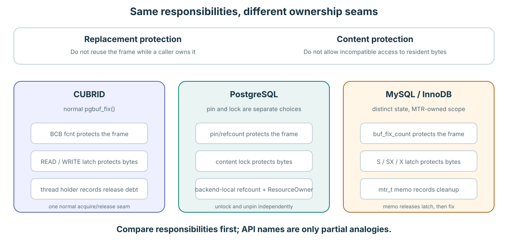

01 · 비교 원칙
모든 engine은 두 질문에 답해야 한다
1. 이 frame을 reuse해도 되는가? 누군가 소유하는 동안 fix 또는 pin이 “안 된다”고 답한다. 2. 다른 worker가 이 byte를 충돌하게 만져도 되는가? latch 또는 content lock이 “안 된다”고 답한다. 이름은 달라도 두 safety 작업은 같다.

API 이름끼리 대응하지 말고 safety responsibility와 cleanup owner를 대응시킨다.
02 · 기억할 세 문장
Worker 하나가 page를 빌리는 방식
| Engine | Frame protection | Byte protection | Cleanup memory |
|---|---|---|---|
| CUBRID | BCB fcnt | Normal pgbuf_fix()가 요청하는 READ/WRITE page latch | Per-thread holder가 기록하고 pgbuf_unfix()가 debt 하나를 갚는다 |
| PostgreSQL | Buffer pin/refcount | 별도로 획득하는 content lock | Backend private refcount와 ResourceOwner, unlock과 unpin은 서로 별도다 |
| MySQL / InnoDB | Atomic buf_fix_count | Block S/SX/X latch | mtr_t memo가 resource를 기억하고 latch, fix 순서로 release한다 |
CUBRID는 normal fix와 latch request를 결합한다. PostgreSQL은 pin과 content lock을 따로 노출한다. InnoDB는 state를 분리하지만 한 MTR memo가 lifetime을 소유한다.
03 · Replacement 한 줄 요약
모두 owned frame을 거부하지만 “hot”을 기억하는 방식이 다르다
| Engine | Replacement 그림 한 줄 |
|---|---|
| CUBRID | Private/shared list 안에서 page가 LRU1 → LRU2 → LRU3로 age하며 victim search는 LRU3를 본다. |
| PostgreSQL | Clock hand가 pinned buffer를 건너뛰고 양수 usage_count를 줄인 뒤 unpinned zero를 고른다. |
| InnoDB | 새 read는 young/old LRU의 old 부분에 들어가고, 조건을 만족한 reuse는 young으로 올리며 candidate는 old tail에서 나온다. |
Mechanism과 정확한 default가 궁금한가? Lesson 18A: replacement policy 비교로 이어진다. 상세 내용을 별도 page로 분리해 기본 ownership 비교를 읽기 쉽게 유지했다.
04 · 이 비교가 증명하지 못하는 것
Benchmark 주장은 측정 evidence로 검증합니다
- Clock sweep가 본질적으로 LRU보다 빠르거나 midpoint LRU가 두 방식보다 우월하다고 말할 수 없다.
- Pool size, access pattern, dirty-page pressure, sharding, concurrency를 빼고 replacement policy만 비교할 수 없다.
- 다른 engine의 structure를 복사하려면 CUBRID의 holder, waiter, flush generation, quota, direct-victim contract도 보존해야 한다.
이 비교로 winner를 선언하지 말고 workload-specific question을 만든다.
05 · Retrieval 연습
여섯 핵심 문장을 직접 설명합니다
문제
Teammate가 “세 buffer pool의 차이를 가장 짧고 정확하게 설명해 달라”고 묻는다.
할 일: 공통 safety 작업 두 개, engine별 ownership 문장 하나와 replacement 문장 하나를 말한 뒤 speed ranking이 아닌 이유를 설명하라.
답안을 chat에 붙여 넣으세요. 각 API analogy가 실제로 담당하는 responsibility를 말했는지 확인하겠습니다.
필수 읽기
Ownership depth와 replacement depth 중 하나를 고른다
- CUBRID holder lookup과 lock-free fix/unfix.
- PostgreSQL private-refcount rationale와
PinBuffer(). - InnoDB buffer-fix count와 MTR memo release.